Introduction
Ce rapport accompagne le relevé d'audit effectué sur le site « myguichet.lu ».
La méthodologie d'audit employée repose sur le référentiel RGAA 4.1, consultable à l'adresse suivante : https://accessibilite.public.lu/fr/rgaa4.1/criteres.html
L'audit a été réalisé au moyen de l'utilisation de navigateurs web et d'outils spécialisés. Des tests de restitution ont également été effectués conformément à la base de référence définie par le RGAA 4.1.
Échantillon
L'audit a porté sur un échantillon de 10 pages pour le niveau double A (AA) :
| Nº page | Titre de la page | URL |
|---|---|---|
| P01 | Sélectionner un espace | https://www.services-publics.lu/fpgun-iep-front/ |
| P02 | Mon espace professionnel | https://www.services-publics.lu/fpgun-iep-front/space/?spaceId=711426 |
| P03 | Mes démarches | https://www.services-publics.lu/fpgun-iep-front/space/procedures/ |
| P04 | Catalogue des démarches | https://www.services-publics.lu/fpgun-iep-front/space/procedures-catalogue |
| P05 | Démarche étape 1 Personne morale | https://www.services-publics.lu/fpgun-mj-casier/Controler?documentId=casier_judiciaire_PM_fr&action=login&ids=userData&ids=draftData&sds=draftData&mediaType=ji_html&portal=SOAPPortal&dialogAUTH=979578d0777b600e7e9188deb1dead484988f42f19b9431db3f7dc764a74c3fb3a7656e9f8c4dbbe164bddd95eb092164b1e4019ea1d98890a334155f670f65b64005de82f7f195527b5a76816e7c8f5322f1faac0c6a4e5838323d5a874e5d9939dd15b53df912c67ce1b3ab0f6e38e833ce490bef814183570b1f57246841672a98f29cdaa2993ce10bf769d7f7d7863523ec2e978700de6a25a48bf4755642351136b7fd66f92dc4164acd8612d1dd9f4c0435dc7496186e4375da54db92e74d740392222dcfaa26baecdaec10aaeb51cf0f73c001bcc90d46678d431e5712ac16ce26b8a67ca8d2bce3e0db1ca002e8acc33f074bccc9de9dad8f92ccd6e1072e340ca9b3b4eaa02836be62172c85efe38dbb53a0b6a199c967082115c5c7cfb485d3e3c971f885030379c3b50b00d73e4720a78da2d1b42f56edbd5c57fb78a9c6eb7bdb530263e40b6332c0f254880fbe40b5c6671ff44fd715c60ea4fb441cd809200f8baa9844144db78d5cf |
| P06 | Démarche étape 2 Demandeur | https://www.services-publics.lu/fpgun-mj-casier/Controler?action=submit&documentId=casier_judiciaire_PM_fr&mediaType=ji_html&layout=normal&jsysCSRFToken= |
| P07 | Démarche étape 3 Demande | https://www.services-publics.lu/fpgun-mj-casier/Controler?action=submit&documentId=casier_judiciaire_PM_fr&mediaType=ji_html&layout=normal&jsysCSRFToken= |
| P08 | Démarche étape 4 Validation de la saisie | https://www.services-publics.lu/fpgun-mj-casier/Controler?action=submit&documentId=casier_judiciaire_PM_fr&mediaType=ji_html&layout=normal&jsysCSRFToken= |
| P09 | Suivi d'une démarche | https://www.services-publics.lu/fpgun-iep-front/space/procedures/11696259?spaceId=711426 |
| P10 | Mes données professionnelles | https://www.services-publics.lu/fpgun-iep-front/space/source-themes |
Environnement de test (base de référence)
Quelques critères RGAA, notamment ceux de la thématique JavaScript, incluent des tests de restitution à effectuer sur des technologies d'assistance associées à des navigateurs et des systèmes d'exploitation. Pour qu'un dispositif HTML / WAI-ARIA ou son alternative soit considéré comme compatible avec l'accessibilité, il faut qu'il soit pleinement fonctionnel, en termes de restitution et de fonctionnalités sur certaines combinaisons. Vous trouverez une explication détaillée de cet environnement de tests dans le document du RGAA 4.1.
Nous détaillons ci-dessous la base de référence utilisée pour réaliser les tests de restitution des composants du site.
Environnement de test – ordinateur
| Technologie d'assistance | Navigateur |
|---|---|
| VoiceOver (macOS Monterey version 13.0) | Safari 16.1 |
La version de test du site n’est disponible que sur un environnement contrôlé. Aucun test n’a été fait sur JAWS ni sur NVDA en raison des contraintes techniques.
Environnement de test — mobile
La version de test du site n’est disponible que sur un environnement contrôlé. Aucun test n’a été fait sur mobile en raison des contraintes techniques.
Accessibilité des pages auditées
Le site présente un niveau général d'accessibilité moyen.
Le niveau de conformité relevé atteint 54,10 % de conformité sur l'ensemble des pages auditées, avec 50,00 % de conformité au niveau simple A (A) et 64,71 % de conformité au niveau double A (AA).
Le site est partiellement conforme.
Conformité RGAA 4.1 du site
| Conforme | Non conforme | |
|---|---|---|
| A | 50,00% | 50,00% |
| AA (légal) | 54,10% | 45,90% |
Note sur le calcul de conformité
La conformité globale (Tableau « Conformité RGAA 4.1 ») est calculée de la manière suivante : C / (C+NC). C'est le nombre de critères conformes et NC le nombre de critères non conformes.
C'est ce nombre qui constitue la référence légale. Il représente le taux de conformité de l'échantillon.
Il est normal que le taux de conformité global diffère sensiblement du taux de conformité par page. En effet, un critère NC (non conforme) sur une page rend le critère non conforme sur l'ensemble de l'échantillon.
Pour qu'un site soit conforme (100 % des critères applicables sont conformes au niveau AA), il est nécessaire que le taux de conformité par page équivaille à 100 %.
Conformité pour chaque niveau
| Conforme | Non conforme | |
|---|---|---|
| A | 50,00% | 50,00% |
| AA | 64,71% | 35,29% |
Moyenne par pages
| Nº page | Titre de la page | %C |
|---|---|---|
| P01 | Sélectionner un espace | 97,56% |
| P02 | Mon espace professionnel | 97,14% |
| P03 | Mes démarches | 86,96% |
| P04 | Catalogue des démarches | 87,80% |
| P05 | Démarche étape 1 Personne morale | 65,12% |
| P06 | Démarche étape 2 Demandeur | 63,16% |
| P07 | Démarche étape 3 Demande | 85,71% |
| P08 | Démarche étape 4 Validation de la saisie | 76,67% |
| P09 | Suivi d'une démarche | 82,61% |
| P10 | Mes données professionnelles | 96,97% |
Moyenne par thématiques
| Thématiques | C | NC |
|---|---|---|
| Images | 66,67% | 33,33% |
| Cadres | 0,00% | 0,00% |
| Couleurs | 66,67% | 33,33% |
| Multimédia | 0,00% | 0,00% |
| Tableaux | 0,00% | 0,00% |
| Liens | 100,00% | 0,00% |
| Script | 20,00% | 80,00% |
| Éléments obligatoires | 55,56% | 44,44% |
| Structuration | 0,00% | 100,00% |
| Présentation | 45,45% | 54,55% |
| Formulaires | 27,27% | 72,73% |
| Navigation | 88,89% | 11,11% |
| Consultation | 100,00% | 0,00% |
Impacts utilisateurs
Les principales personnes impactées sont les personnes aveugles et celles qui naviguent au clavier. Les problèmes liés aux scripts, à l'API ARIA et aux formulaires rendent parfois difficile l'utilisation du site par ces utilisateurs.
Note sur le relevé des non-conformités
Ne sont cités dans ce rapport que quelques exemples issus du relevé des non-conformités.
De plus, toutes les occurrences d'une non-conformité ne sont pas listées dans le relevé. Par exemple : pour les images décoratives, le relevé mentionne quelques occurrences, mais ne les cite pas toutes.
Avis
Les non-conformités les plus bloquantes pour les utilisateurs concernent :
- Les scripts et l'utilisation de l'API ARIA ;
- Les formulaires (étiquettes et contrôle de saisie) ;
- Les contenus insérés via des styles CSS ou des images sans alternative ;
- La structuration des contenus (titres, listes et éléments de structure HTML).
Ce sont donc ces points qui devront nécessiter une attention toute particulière et qui demanderont le plus d'efforts.
Annexe technique
Images
Recommandation
Donner à chaque image porteuse d'information une alternative textuelle pertinente et une description détaillée si nécessaire. Lier les légendes à leurs images. Remplacer les images textes par du texte stylé lorsque c'est possible.
Images de décoration
Le site contient des images de décoration qui ne sont pas correctement identifiées, soit parce qu'elles ont une alternative renseignée, soit parce qu'il manque les attributs nécessaires pour qu'elles soient ignorées par les technologies d'assistance.
Ces images n'apportent aucune information et peuvent causer des problèmes de compréhension pour les aveugles et les grands malvoyants qui vont écouter les contenus avec un lecteur d'écran.
- Dans le cas d'une image insérée avec la balise
img, mettre unalt="". - Dans le cas d'une image insérée avec la balise
svg, mettre une propriété ARIAaria-hidden="true".
Constats sur le site
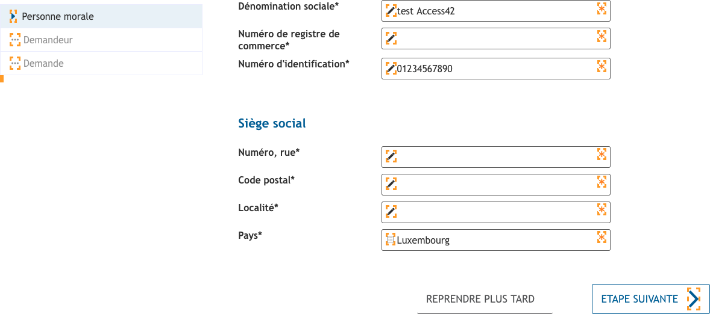Page « Démarche étape 1 Personne morale » et autres pages de la démarche, les polices-icônes (avec la classe .fp-icon) ne sont pas ignorées.
Couleurs
Recommandation
Ne pas donner l'information uniquement par la couleur et utiliser des contrastes de couleurs suffisamment élevés pour les textes et les composants d'interface.
Contrastes des textes
Plusieurs couleurs présentent un rapport de contraste insuffisant, ce qui peut poser problème aux personnes déficientes visuelles qui ont des difficultés à percevoir les couleurs ou les contrastes.
Rapports de contrastes définis par le RGAA
- Pour les textes qui ont une taille de police calculée inférieure à 24px sans effet de graisse ou une taille de police calculée inférieure à 18,5px avec effet de graisse, le rapport de contraste entre la couleur du texte (y compris le texte en image) et son arrière-plan doit être de 4.5:1, au moins.
- Pour les textes qui ont une taille de police calculée supérieure ou égale à 24px sans effet de graisse ou une taille de police calculée supérieure ou égale à 18,5px avec effet de graisse, le rapport de contraste entre la couleur du texte (y compris le texte en image) et son arrière-plan doit être de 3:1, au moins.
Vous pouvez foncer les couleurs pour obtenir le rapport de contraste exigé.
Si la charte graphique ne peut être modifiée, fournissez une méthode aux utilisateurs pour consulter le site avec des contrastes suffisants. Ceci peut être réalisé simplement avec une fonctionnalité JavaScript et une surcharge CSS des couleurs.
Vous pouvez voir un exemple de ce type de mécanisme sur le site sncf.com. Dans les réglages d'accessibilité, vous trouverez une option qui permet d'afficher le site avec des contrastes renforcés et inversés.
Constats sur le site
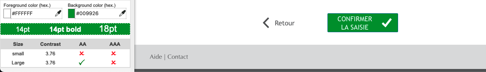Page « Démarche étape 4 Validation de la saisie », la couleur #FFFFFF du bouton « Confirmer la saisie » sur le fond #009926 (ratio : 3.76).
Scripts
Recommandation :
Donner si nécessaire à chaque script une alternative pertinente. Rendre possible le contrôle de chaque code script au moins par le clavier et la souris et s'assurer de leur compatibilité avec les technologies d'assistance. Identifier les messages de statut lorsque c'est nécessaire.
Utilisation des boutons et des liens
Pour les aveugles et les grands malvoyants qui utilisent un lecteur d'écran, ce manque de distinction claire entre les liens et les boutons peut poser de graves problèmes.
Ainsi, un bouton implémenté sous la forme d'un lien qui déclenche une action de la page, risque de perturber l'utilisateur qui s'attendra au chargement d'une nouvelle page.
De manière générale, les liens devraient être réservés à l'affichage d'une nouvelle page ou la création de liens d'accès rapide dans le contenu. Dans tous les autres cas, l'emploi d'un bouton d'action est plus pertinent.
Enfin, chaque bouton doit avoir un nom accessible défini, soit par l'intermédiaire d'un texte (visible ou positionné hors écran) ou d'une propriété title, aria-label ou aria-labelledby.
Constats sur le site
Page « Sélectionner un espace », les composants de changement de langue (par exemple « DE » et « EN ») déclenchent des événements JavaScript, mais sont implémentés dans des liens. Ils devraient être implémentés dans des éléments <button>.
Utilisation inappropriée de propriétés ARIA
Les propriétés ARIA sont chargées de transmettre des informations indispensables à la restitution et l'utilisation des composants développés avec JavaScript aux technologies d'assistance. Une utilisation inappropriée peut poser des problèmes de restitution notamment.
Constats sur le site
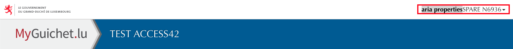Page « Démarche étape 1 Personne morale », la propriété aria-haspopup n'est pas pertinente sur le bouton « SPARE N6936 » en haut de page qui affiche le menu utilisateur.
Page « Démarche étape 1 Personne morale », le fil d'Ariane « Étapes » implémente un système d'onglets qui ne respecte pas le motif de conception ARIA Tabs et qui n'est pas pertinent. Supprimer le système d'onglets et le remplacer par une propriété aria-current="step" sur l'étape active du fil d'Ariane.
Fenêtres modales
Constats sur le site
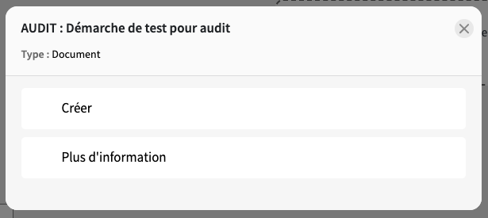Page « Catalogue des démarches », la modale « AUDIT : Démarche de test pour audit » (activable depuis le bouton « Afficher plus d'actions ») n'a pas de nom.
Barres de progression
Constats sur le site
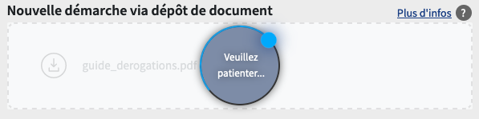Page « Catalogue des démarches », la barre de progression « Veuillez patienter... » n'est pas accessible :
- Ajouter un
role="progressbar"à l'élément « Veuillez patienter... » et les propriétés :aria-valuemin="0",aria-valuemax="100",aria-valuenow="[valeur instantanée]",aria-valuetext="[valeur instantanée] %";aria-label="Veuillez patienter...";tabindex="-1".
- Lorsque la barre de progression est affichée :
- repositionner le focus sur l’élément qui possède le
role="progressbar"; - avec JavaScript, créer une boucle par exemple sur un intervalle de 0,3 secondes et incrémenter de 1 les propriétés
rolearia-valuenow etrolearia-valuetext.
- repositionner le focus sur l’élément qui possède le
- Lorsque la barre de progression est supprimée ou masquée : repositionner le focus sur un élément pertinent.
Accordéons
Constats sur le site
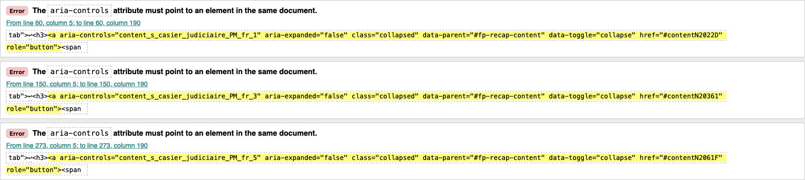Page « Démarche étape 4 Validation de la saisie » :
- Le contenu de la page implémente un accordéon qui ne respecte pas les principes du motif de conception ARIA Accordion. Le système d'onglets actuel (motif de conception ARIA Tabs) n'est pas pertinent ici ;
- Les propriétés
aria-controlsde l'accordéon font référence à des éléments qui n'existent pas ; - Les boutons de l'accordéon ne s'activent pas à l'aide de la touche Espace.
Date pickers
Constats sur le site
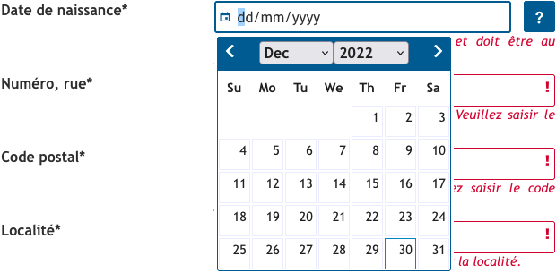Page « Démarche étape 2 Demandeur », le champ « Date de naissance » constitue une alternative suffisante au composant Date Picker, mais il manque une indication de format dans l'étiquette du champ ; par exemple « Date de naissance (jj/mm/aaaa) ». L'attribut placeholder n'est pas considéré comme une étiquette.
Message de statut
Les messages de statut concernent les messages d'alerte, de confirmation ou d'historisation. Dans tous ces cas, certains utilisateurs, par exemple les personnes aveugles ou les utilisateurs de loupes d’écran vocalisées, risquent de ne pas prendre connaissance de ces messages si leur restitution n'est pas contrôlée.
L'API ARIA propose plusieurs rôles spécifiques qui permettent de contrôler la restitution de ce type de message :
- Le
role="alert"pour les messages d'alerte ; - Le
role="status"pour les messages de confirmation ; - Le
role="log"pour les messages d'historisation.
L'utilisation appropriée de ces rôles va permettre de déclencher leur vocalisation dès qu'ils deviendront actifs (rendus visibles ou insérés dans le DOM).
Constats sur le site

Page « Démarche étape 1 Personne morale », le message « Inactivité : Sans action de votre part, votre déclaration sera sauvegardée en l'état et vous serez redirigé vers MyGuichet. » n'est pas correctement restitué aux technologies d'assistance.
Changement de contexte
Un changement de contexte est une situation où un utilisateur ne peut pas anticiper le fonctionnement d'une fonctionnalité lorsque celle-ci ouvre une nouvelle page, valide un formulaire ou ajoute ou modifie du contenu dans la page par exemple.
Cela concerne plus spécifiquement les fonctionnalités qui se lancent sans que l'utilisateur puisse les anticiper comme, par exemple, la soumission automatique d’un champ de formulaire sur la sélection d'un item ou lorsque l'utilisateur quitte un champ de saisie.
Constats sur le site

Page « Mes démarches », la sélection d'un bouton radio ou de la case à cocher dans les blocs « Filtres » et « Tri » déclenche automatiquement la mise à jour du formulaire sans que l'utilisateur en soit informé.
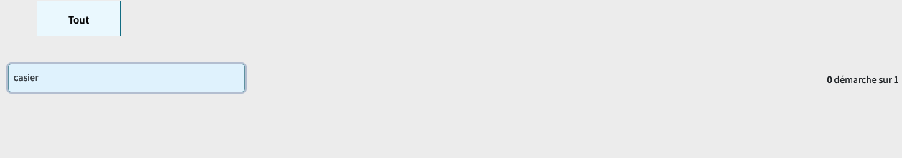Page « Catalogue des démarches », la saisie dans le champ « Rechercher par mot clé » déclenche automatiquement la mise à jour du formulaire sans que l'utilisateur en soit informé.
Éléments obligatoires
Recommandation
Vérifier que chaque page web a un code valide selon le type de document, un titre pertinent et une indication de langue par défaut. Vérifier que les balises ne sont pas utilisées uniquement à des fins de présentation, que les changements de langues et de direction de sens de lecture sont indiqués.
Titre de la page
Le titre de la page (visible dans l'onglet du navigateur) est un élément de repère dans le site web. Pour les utilisateurs de lecteurs d'écran (utilisateurs aveugles ou grands malvoyants), c'est le premier élément restitué par le lecteur d'écran au chargement de la page. Cela permet de donner du contexte aux utilisateurs qui n'ont pas une vision globale de la page. C'est l'information à laquelle les utilisateurs avec des troubles de la mémoire accèdent lorsqu'ils naviguent avec l'historique de navigation du navigateur. Il est donc essentiel d'avoir des titres de pages pertinents, concis et très souvent uniques dans le site, et qui reflètent de la position de l'utilisateur dans le site web.
Il est des cas particuliers, comme les pages dont le contenu est une liste de résultats paginés (ex. : les résultats de recherche), pour lesquels le titre doit refléter la nature de la recherche ainsi que le numéro de page en cours de consultation.
Constats sur le site
Page « Démarche étape 2 Demandeur » et autres pages de la démarche, toutes les pages ont le même titre. L'étape en cours du formulaire (« Demandeur » ou « Identité du demandeur ») n'est pas reprise dans le titre de la page.
Indication de langue
Les lecteurs d'écran utilisent les indications de langue pour vocaliser le contenu dans la langue définie. La page doit contenir une définition de langue principale (généralement sur l'élément html).
Ensuite, les éléments de langue étrangère présents dans le contenu doivent être signalés. Si on trouve dans la page des termes absents du dictionnaire de la langue principale de la page, il faut les identifier afin que le lecteur d'écran les restitue dans la langue appropriée. En effet, une mauvaise prononciation pourrait mener à des incompréhensions pour les utilisateurs qui reposent uniquement sur des restitutions orales. Les noms propres sont exclus de cette obligation.
Constats sur le site
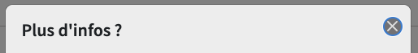Page « Catalogue des démarches », le bouton "Close" de la fenêtre modale « Plus d'infos ».
Validité du code
Les technologies d'assistance, comme les lecteurs d'écran ou les systèmes de contrôle à la voix, s'appuient sur le code des pages pour générer les restitutions et les interactions avec l'utilisateur. Un lecteur d'écran va exploiter le code HTML fourni par le navigateur et les informations accessibles au moyen des API d'accessibilité du système.
Si le code comporte des erreurs (balises mal fermées par exemple), il y a un risque que les fonctionnalités du lecteur d'écran soient impactées, comme la navigation de lien en lien par exemple.
Pour vérifier la conformité d'une page, vous pouvez utiliser le validateur mis à disposition par le W3C.
Constats sur le site
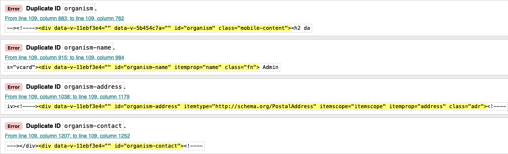Page « Suivi d'une démarche », des valeurs d'identifiants sont dupliquées : « organism », « organism-name », « organism-address » et « organism-contact ».
Balises utilisées à des fins de présentation
Les éléments de structure HTML ont chacun une sémantique particulière (paragraphe, titre, image, lien, etc.). Si les éléments sont mal employés (détournés de leur utilité première), cela peut poser des problèmes aux utilisateurs qui naviguent à l'aide d'une technologie d'assistance (lecteur d'écran, plug-in…). En effet, les technologies d'assistance disposent de raccourcis permettant de naviguer rapidement entre certains types d'éléments (paragraphes, titres, listes, etc.). Si ces éléments sont mal employés, les utilisateurs ne peuvent pas utiliser ces fonctionnalités de repère et de navigation dans le contenu.
Constats sur le site
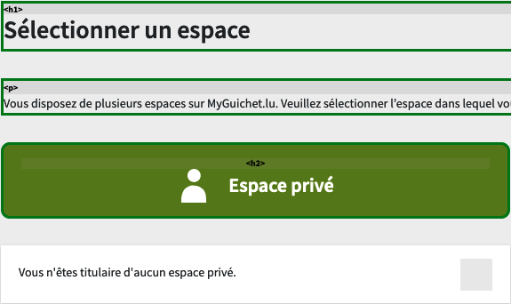 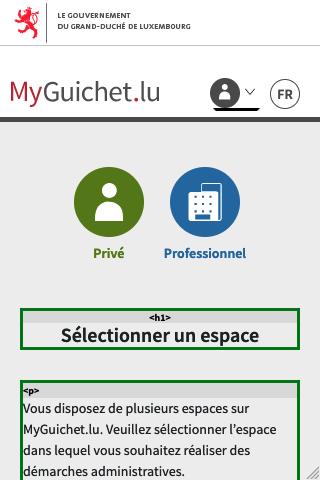Page « Sélectionner un espace » :
- Le texte « Vous n'êtes titulaire d'aucun espace privé. » est uniquement structuré à l'aide de
<div>. - Sur la version mobile, les textes « Privé » et « Professionnel » sont uniquement structurés à l'aide de
<div>.
Page « Mon espace professionnel », les textes « 0 À corriger », « 3 En préparation », etc. du bloc « Mes démarches » sont uniquement structurés à l'aide de <div>.
Page « Démarche étape 1 Personne morale » :
- Les messages d'erreur du formulaire sont uniquement structurés à l'aide de
<span>, par exemple le texte « Le numéro de registre de commerce est obligatoire. Veuillez saisir le numéro de registre de commerce. ». - On trouve un paragraphe vide servant à créer un espacement entre les deux groupes de champs.
Structuration de l'information
Recommandation
Utiliser des titres, des listes, des abréviations et des citations pour structurer l'information. S'assurer que la structure du document est cohérente.
Titres
Le titrage des contenus est une étape importante dans la structuration des contenus. Cela répond à deux besoins :
- identifier rapidement un contenu recherché ;
- naviguer rapidement dans le contenu en se déplaçant de titre en titre.
Un titrage correct fournit à l'utilisateur d'un lecteur d'écran un plan du document et lui permet de naviguer de titre en titre pour se déplacer plus rapidement dans le contenu de la page.
Pour valider la structure de votre page, vous pouvez utiliser l'extension Firefox HeadingsMap. Lorsque l'extension est active, sélectionnez l'onglet « Headings » et vérifiez la cohérence et l'imbrication des titres.
Constats sur le site
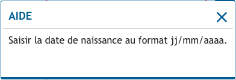Page « Démarche étape 2 Demandeur », le texte « Aide » des fenêtres modales « Aide » devrait être un titre.
Listes
La structuration en listes permet aux utilisateurs de lecteurs d'écran de consulter plus rapidement le contenu, grâce à des raccourcis spécifiques, et d'accéder directement à une liste ou de la passer sans avoir à en parcourir tous les items.
Constats sur le site
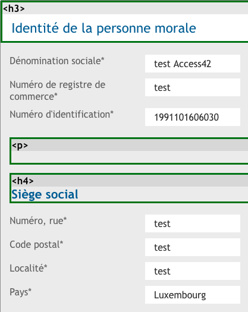Page « Démarche étape 4 Validation de la saisie », les données de l'accordéon.
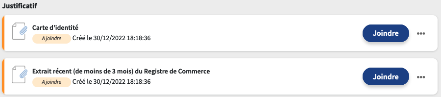Page « Suivi d'une démarche », la liste des justificatifs de l'onglet « Dossier ».
Structure du document
L'utilisation correcte des balises HTML5 et des landmarks ARIA va permettre d'enrichir la restitution pour les utilisateurs aveugles qui ne perçoivent pas les mises en forme : la navigation principale ne sera plus perçue simplement comme une liste de liens, elle sera restituée à l'utilisateur comme un élément de navigation, par l'intermédiaire du lecteur d'écran qui annoncera « région » ou « repère ».
De plus, ces marqueurs sémantiques vont également constituer des éléments de navigation rapide dans la page. Grâce à un raccourci clavier, certains utilisateurs vont pouvoir naviguer plus rapidement entre les régions qui auront été ainsi identifiées.
Constats sur le site
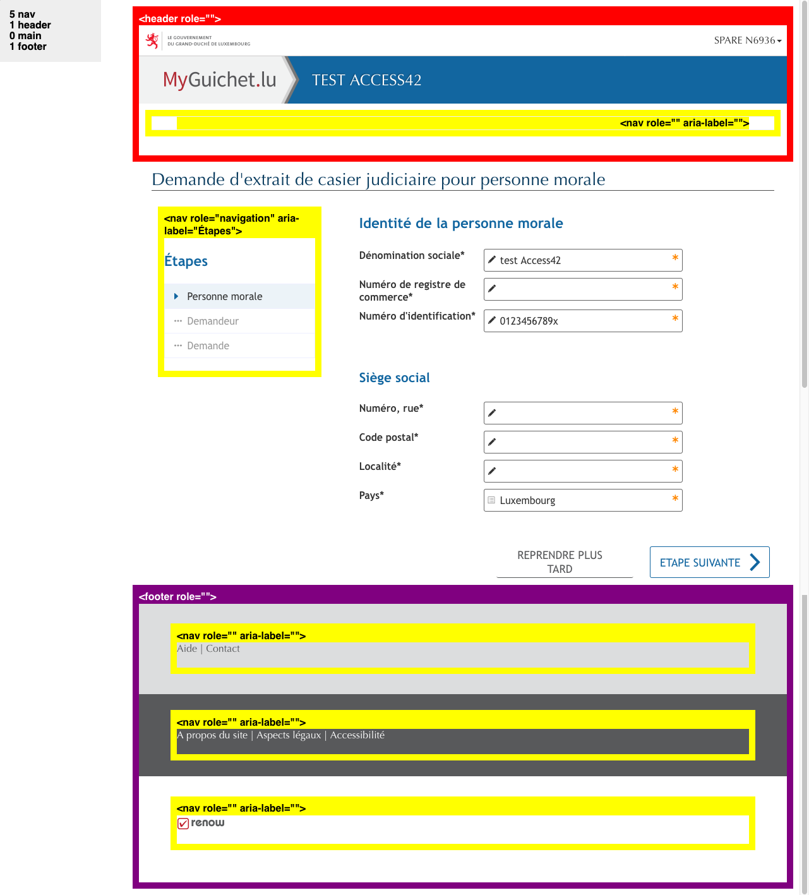Page « Démarche étape 1 Personne morale » et autres pages de la démarche :
- Il manque une balise
<main>sur le contenu principal ; - Les balises
<nav>ne sont pas pertinentes dans l'en-tête de la page (balise vide) ni sur les listes de liens du pied de page (« Aide et Contact », « A propos du site, Aspects légaux et Accessibilité » et « renow ») ; - Les boutons « Reprendre plus tard » et « Etape suivante » peuvent être implémentés dans une zone de navigation.
Présentation de l'information
Recommandation
Utiliser des feuilles de styles pour contrôler la présentation de l'information. Vérifier l'effet de l'agrandissement des tailles des caractères sur la lisibilité. S'assurer que les liens sont correctement identifiables, que la prise de focus est signalée, que l'interlignage est suffisant et donner la possibilité à l'utilisateur de contrôler la justification des textes. S'assurer que les textes cachés sont correctement restitués et que l'information n'est pas donnée uniquement par la forme ou la position d'un élément. S'assurer que les contenus sont lisibles et utilisables dans une fenêtre de largeur réduite. Veiller à ce que l'application de paramètres typographiques n'entraîne pas la perte de contenu ou de fonctionnalité. S'assurer que les contenus qui apparaissent au survol et à la prise de focus puissent être contrôlés par l'utilisateur.
Utilisation de CSS exclusivement
Certains utilisateurs qui présentent des troubles de la lecture (personnes dyslexiques par exemple), vont avoir besoin d'adapter la présentation des pages avec leurs propres mises en forme. Cela est possible sans difficulté si le site web utilise exclusivement les feuilles de styles CSS pour réaliser les mises en forme. Cependant, l'utilisation d'attributs et balises HTML de mise en forme rend ces adaptations plus compliquées, sinon impossibles.
Le RGAA donne la liste des attributs et balises qu'il est interdit d'utiliser.
Constats sur le site
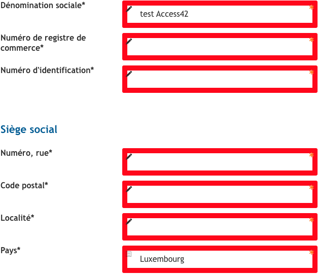Page « Démarche étape 1 Personne morale » et autres pages de la démarche, l'attribut size sur les champs de formulaire.
Contenu visible sans les feuilles de styles
Des contenus informatifs insérés avec CSS (avec des images de fond contenant du texte en image) peuvent ne pas être restitués par les lecteurs d'écran ou les systèmes de loupes vocalisés.
Constats sur le site
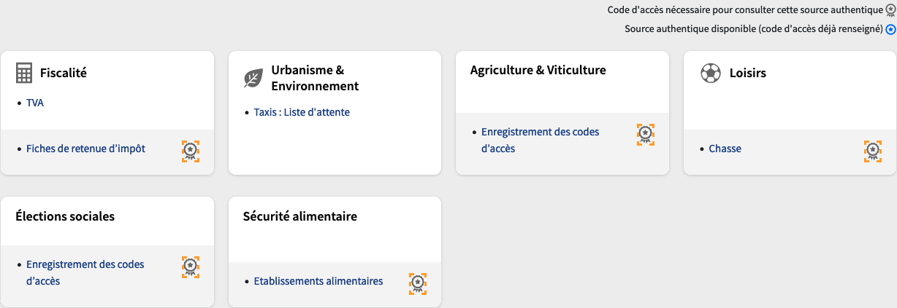Page « Mes données professionnelles », les icônes « Code d'accès nécessaire pour consulter cette source authentique » de la liste des sources ne sont pas restituées par les technologies d'assistance.
Contenu compréhensible sans les styles : ordre visible vs ordre réel
Un utilisateur aveugle n'a pas accès à la mise en forme qui parfois est porteuse d'informations importantes, notamment des relations entre les éléments.
Il est important de ne pas implémenter les textes dans l'ordre visuel, mais bien dans l'ordre logique de dépendance et hiérarchie des éléments.
Le contenu doit rester compréhensible sans les feuilles de styles (vous pouvez tester vos contenus en désactivant les feuilles de styles).
Constats sur le site
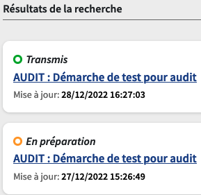Page « Mes démarches », le statut (« En préparation » ou « Transmis ») de chaque démarche se trouve avant le titre auquel il réfère dans le code source.
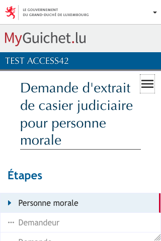Page « Démarche étape 1 Personne morale », sur la version mobile, le bloc « Étapes » ne se trouve pas à la suite du bouton qui permet de l'afficher dans le code source. Le titre se trouve entre le bouton et la zone affichée.
Visibilité de la prise de focus
Les personnes avec un handicap moteur qui naviguent au clavier peuvent rencontrer des difficultés considérables à utiliser du contenu si elles ne sont pas en mesure de repérer l'indication visuelle du focus et ses déplacements.
Constats sur le site
 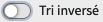
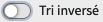
Page « Mes démarches » :
- La prise de focus n'est pas suffisamment contrastée sur le lien « Nouvelle démarche ».
- La prise de focus n'est pas suffisamment contrastée sur le bouton switch « Tri inversé » du bloc « Tri ».
Contenu masqué aux technologies d'assistance
Constats sur le site
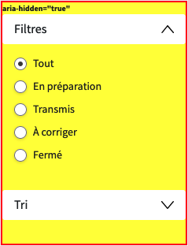Page « Mes démarches », la barre latérale (blocs « Filtres » et « Tri ») possède la propriété aria-hidden="true".
Largeur réduite
Il s'agit ici de tester la capacité des contenus à se réorganiser lorsqu'un utilisateur malvoyant doit réaliser un zoom graphique de 400%. À ce titre, on teste la lisibilité des contenus dans une fenêtre de largeur réduite à 320px.
On s'assure que l'utilisateur a accès à tous les contenus et que tous les contenus sont lisibles sans avoir recours à la barre de défilement horizontale.
Constats sur le site
Page « Démarche étape 1 Personne morale », les boutons « Reprendre plus tard » et « Etape suivante » se chevauchent.
Formulaires
Recommandation :
Associer pour chaque formulaire chacun de ses champs à son étiquette, grouper les champs dans des blocs d'informations de même nature, regrouper les items de même nature dans les listes de choix, donner à chaque bouton un intitulé explicite. Vérifier la présence d'aide à la saisie, s'assurer que le contrôle de saisie est accessible et que l'utilisateur peut contrôler les données à caractère financier, juridique ou personnel.
Étiquettes et champs
Les champs de formulaires doivent tous posséder des étiquettes correctement reliées.
Une étiquette de champ est un texte situé à proximité du champ de formulaire qui permet de connaître la nature, le type ou le format des informations attendues.
De cette manière, lorsqu'un utilisateur entre dans le champ de saisie avec un lecteur d'écran, le lecteur d'écran lit le contenu de l'étiquette. L'utilisateur comprend alors ce qu'il doit saisir.
Sans cela, même si une étiquette est présente visuellement, l'utilisateur entendra « champ de saisie vide » en entrant dans le champ et ne saura donc pas quoi saisir.
Constats sur le site
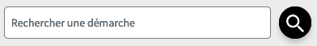Page « Mes démarches », le champ « Rechercher une démarche » ne possède pas d'étiquette visible. L'attribut placeholder n'est pas considéré comme étiquette visible.
Page « Démarche étape 2 Demandeur » :
- Les boutons radio du groupe « Justificatif d'identité de la personne concernée* » ont tous « Justificatif d'identité de la personne concernée* » pour étiquette. Les étiquettes uniques « Carte d'identité », « Passeport » et « Carte d'étranger » sont ignorées ;
- La case à cocher « Justificatif du rôle* » a « Justificatif du rôle* » pour étiquette. Le texte plus précis « Un extrait récent (de moins de 3 mois) du Registre de Commerce indiquant que le demandeur peut engager la personne morale. » est ignoré.
Page « Mes Suivi d'une démarche » :
- Le champ « Type de justificatif » de la fenêtre modale « Joindre un justificatif » ne possède pas d'étiquette.
- Le champ « Rechercher dans mes documents » de la fenêtre modale « Joindre un justificatif » ne possède pas d'étiquette visible.
Étiquettes et champs accolés
Le RGAA 4 exige que chaque étiquette et le champ qu'elle contrôle soient accolés. En effet, si l'étiquette et son champ sont trop éloignés, les utilisateurs malvoyants qui utilisent une loupe d'écran peuvent échouer à faire correspondre l'étiquette et son champ, et donc ne pas saisir les données attendues dans les bons champs.
Constats sur le site
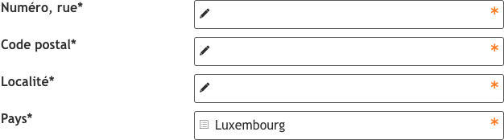Page « Démarche étape 1 Personne morale », les étiquettes du groupe « Siège social » sont trop éloignées de leurs champs.
Contrôle de saisie et aide à la saisie
Tous les champs obligatoires doivent être identifiés préalablement à toute validation de l’utilisateur.
Pour les champs qui attendent un format de saisie particulier pour être validés, ce format doit être spécifié à l’utilisateur par un passage de texte visible à proximité du champ. De plus, si l’utilisateur commet une erreur sur ce champ, alors le message d’erreur doit présenter un exemple réel de saisie.
Enfin, les messages d'erreur de saisie des champs de formulaire doivent être liés correctement aux champs en erreur.
Constats sur le site
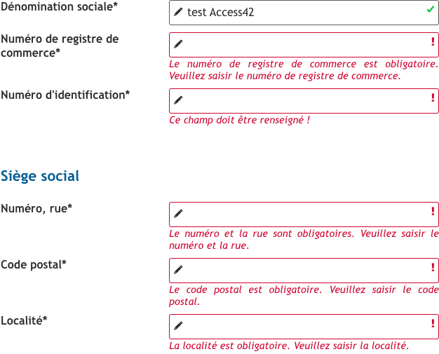Page « Démarche étape 1 Personne morale », les champs obligatoires ne sont pas indiqués. L'astérisque (*) n'est pas suffisamment explicite. Il manque une phrase type « Les champs marqués d'un astérisque (*) sont obligatoires. » avant le formulaire.
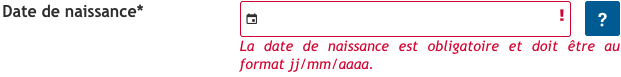Page « Démarche étape 2 Demandeur », le message d'erreur du champ « Date de naissance* » ne contient pas d'exemple de saisie réelle, par exemple « La date de naissance est obligatoire et doit être au format 01/01/1970. ».
Regroupements de champs et légendes
Les regroupements de champs sont utiles pour ne pas induire certains utilisateurs en erreur, notamment les personnes aveugles.
Les cas typiques de regroupements nécessaires sont les groupes de cases à cocher ou de boutons radio.
Il faut implémenter les champs dans un regroupement lorsque c'est nécessaire et il est obligatoire de définir une légende à ce regroupement.
Constats sur le site
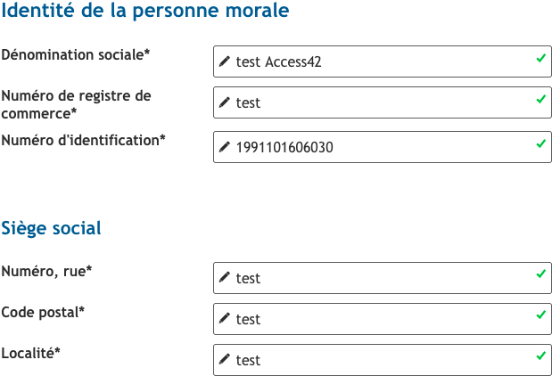Page « Démarche étape 1 Personne morale », ces champs ne sont pas regroupés :
- Les champs du groupe « Identité de la personne morale »
- Les champs du groupe « Siège social ».
Page « Démarche étape 2 Demandeur » :
- Le groupe de boutons radio « Justificatif d'identité de la personne concernée* » n'est pas relié à sa légende.
- Le groupe de la case à cocher « Justificatif du rôle* » n'est pas relié à sa légende.
Identification des données attendues
Certains utilisateurs qui ont des troubles d'accès au langage verbal (paralysie cérébrale, aphasie par exemple) auront des difficultés à accéder au sens des termes écrits. Ainsi, pour leur permettre de remplacer les étiquettes présentes dans les formulaires par des étiquettes (verbales ou imagées) qu'ils connaissent, il est nécessaire d'identifier les champs avec un attribut particulier, de sorte qu'une technologie d'assistance pourra réaliser la personnalisation du formulaire nécessaire à l'utilisateur.
L'identification de ces champs permet également aux utilisateurs d'employer des outils pour remplir automatiquement les champs identifiés avec des valeurs de l'utilisateur.
On ne va rechercher que les champs qui attendent une donnée personnelle. Le RGAA demande d'utiliser l'attribut autocomplete et il fournit l'ensemble des valeurs possibles pour l'attribut.
Constats sur le site

Page « Démarche étape 1 Personne morale », attribut autocomplete="organization" sur le champ « Dénomination sociale* ».
Page « Démarche étape 2 Demandeur » :
- Attribut
autocomplete="family-name"sur le champ « Nom* » ; - Attribut
autocomplete="given-name"sur le champ « Prénom* » ; - Attribut
autocomplete="bday"sur le champ « Date de naissance* » ; - Attribut
autocomplete="street-address"sur le champ « Numéro, rue* » ; - Attribut
autocomplete="postal-code"sur le champ « Code postal* » ; - Attribut
autocomplete="address-level2"sur le champ « Localité* » ; - Attribut
autocomplete="organization-title"sur le champ « Rôle au sein de la société* ».
Navigation
Recommandation :
Faciliter la navigation dans un ensemble de pages par au moins deux systèmes de navigation différents (menu de navigation, plan du site ou moteur de recherche), un fil d'Ariane et l'indication de la page active dans le menu de navigation. Identifier les groupes de liens importants et la zone de contenu et donner la possibilité de les éviter par des liens de navigation interne. S'assurer que l'ordre de tabulation est cohérent et que la page ne comporte pas de piège au clavier. S'assurer que les raccourcis clavier qui utilisent une seule touche sont contrôlables par l'utilisateur.
Landmarks ARIA
Pour fournir des points de repère aux utilisateurs aveugles, il faudra également implémenter les landmarks ARIA sur les balises HTML 5 de la page.
Constats sur le site
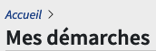Page « Mes démarches », il manque le rôle role="navigation" sur le fil d'Ariane.
Page « Démarche étape 1 Personne morale », il manque le rôle role="banner" sur l'élément <header> et le rôle role="contentinfo" sur l'élément <footer>.